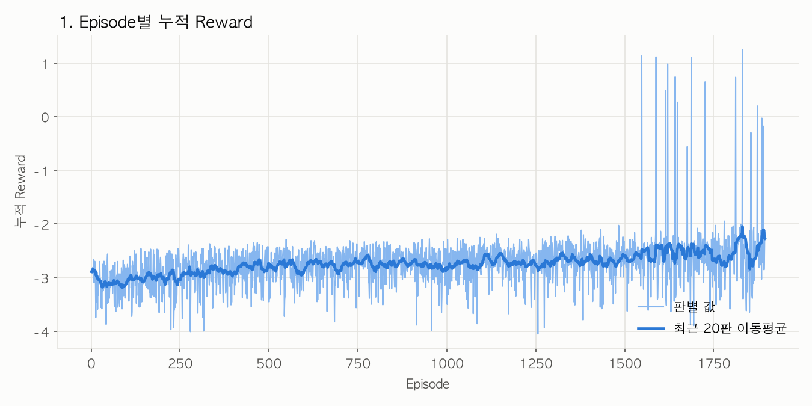
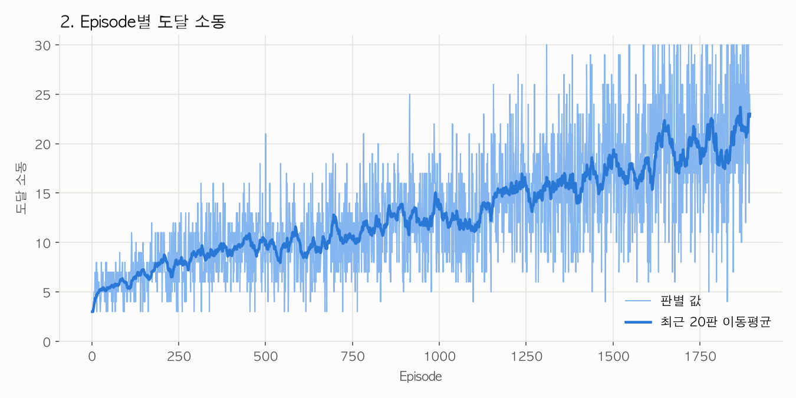
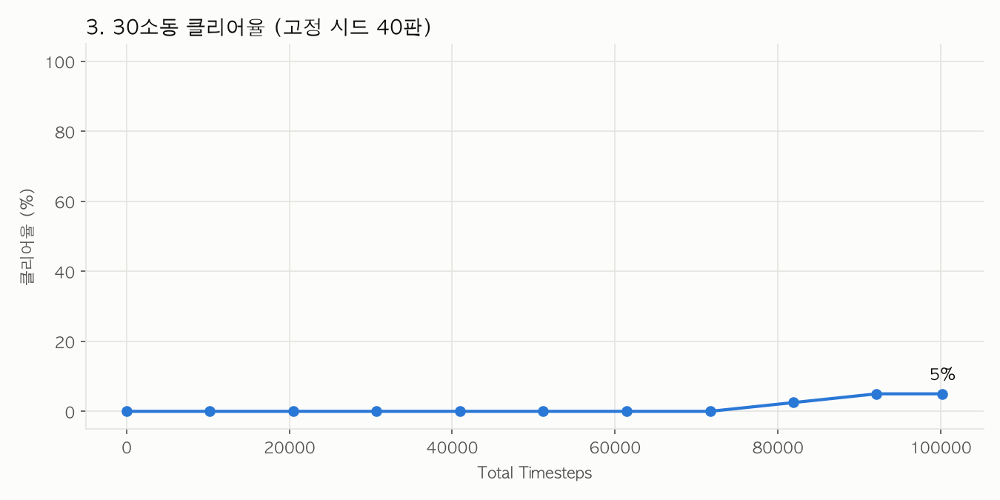
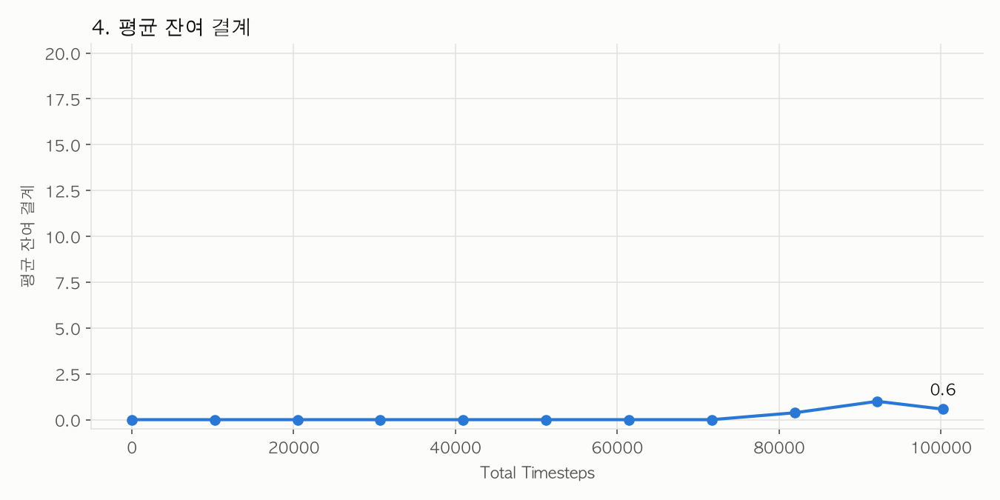
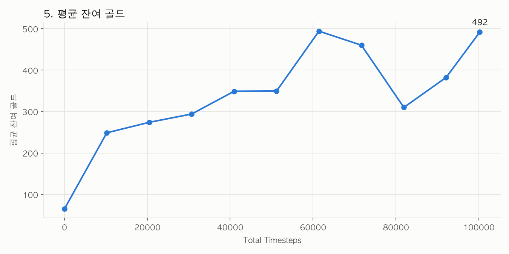
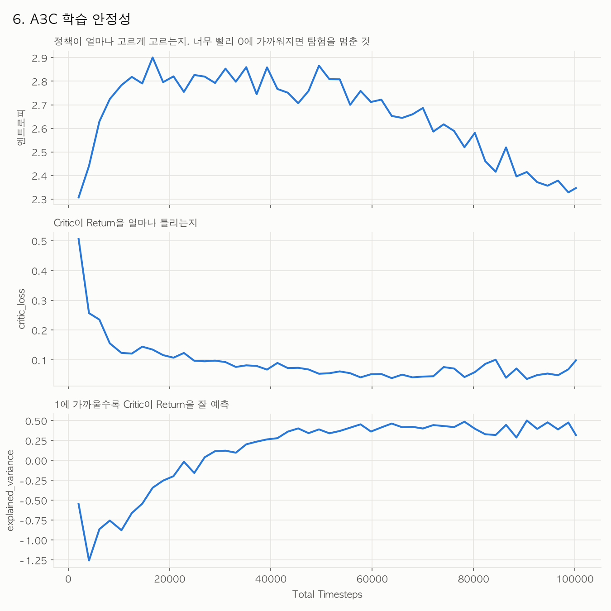
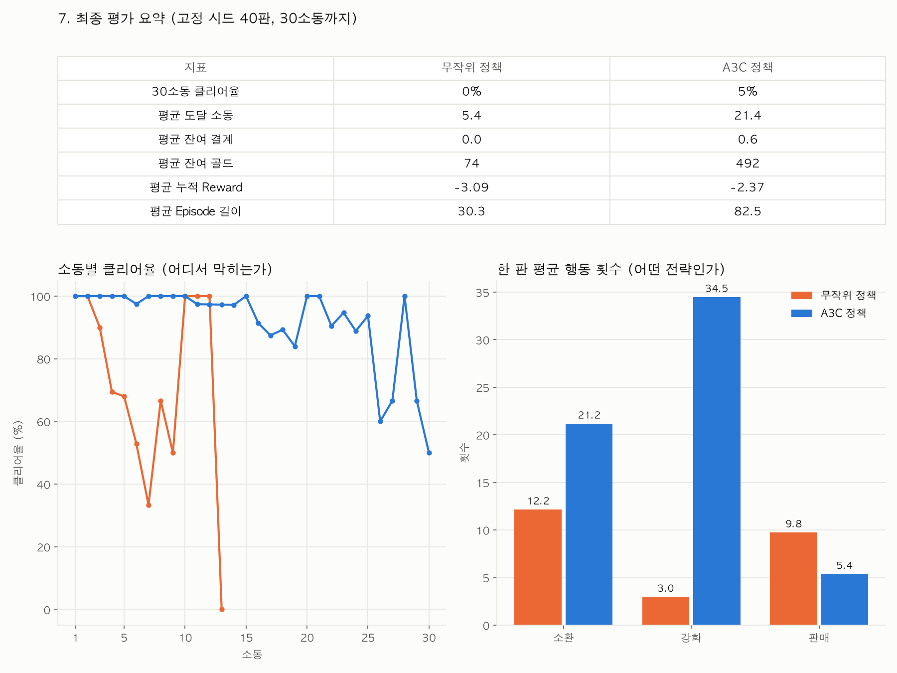

월하사신 강화학습 실험 | 분석일 2026.11.01
A2C v2와 같은 조건(워커 15개 × 18 Step, lr 0.0001)으로 약 100k Step을 학습했다. 평균 도달 소동이 8.90에서 21.43로 올랐고, 30소동 클리어는 2판(5%)이다. 조건에서 다른 점은 갱신 방식(동기 → 비동기) 하나다.
| 지표 | A2C v2 | A3C |
|---|---|---|
| 누적 학습 Step | 100,170 | 100,260 |
| 30소동 클리어 | 0 / 40판 (0%) | 2 / 40판 (5%) |
| 평균 도달 소동 | 8.90 | 21.43 |
| 평균 완료 소동 | 7.90 | 20.48 |
| 평균 소환 횟수 | 14.53 | 21.18 |
| 평균 강화 횟수 | 5.47 | 34.50 |
| 평균 판매 횟수 | 5.85 | 5.38 |
| 평균 잔여 골드 (G) | 205.90 | 491.73 |
| 최고 도달 소동 | 14 | 30 |
평균 도달 소동은 8.90에서 21.43로 약 12.53소동 상승했다. 강화는 평균 5.47회에서 34.50회로 크게 늘었고, 판매는 5.85회에서 5.38회로 줄었다. 소환한 수호자를 팔기보다 강화하는 쪽으로 전략이 바뀌었다.
A3C의 최종 평가 도달 범위는 6~30소동이다. 무작위 정책의 평균 5.40소동보다 크게 높다. 진입한 판이 5판 이상인 소동 가운데 클리어율이 가장 낮은 곳은 26소동 60%, 27소동 67%로, 후반 구간에서 막힌다.
도달 소동은 마지막으로 진입한 소동이다. 30소동 도달은 30소동 클리어를 뜻하지 않는다. 학습 시드 1개의 결과이므로 동기/비동기 차이로 단정하려면 시드를 바꿔 다시 확인해야 한다.
| 항목 | A3C 실행값 |
|---|---|
| 학습 | A3C / 공유 Adam / GAE / 워커별 비동기 갱신 |
| 병렬 워커 및 갱신 단위 | 워커 15개 × 워커당 18 Step마다 갱신 (한 바퀴 270 Step) |
| 학습률 / 할인율 / GAE lambda | 0.0001 / 0.99 / 0.95 |
| 보상 배율 | scale = 0.01 |
| 판매 손실 감점 | 손실 골드 1G당 0.15 × scale = 0.0015점 차감 |
| 행동 고정 감점 | 소환·강화·판매·웨이브 시작 모두 0 |
| 최종 잔여 골드 보상 | 없음 (A2C v2의 goal_gold = 0과 같음) |
보상·학습률·할인율·GAE·배치 크기는 A2C v2와 같다. A2C는 환경 15개가 모은 270 Step으로 한 번에 갱신하고, A3C는 워커마다 18 Step을 모으면 공유 모델을 바로 갱신한다. 둘 다 resume=false로 새로 시작했다. value_coef 0.5, entropy_coef 0.01, max_grad_norm 0.5, hidden 128은 A2C v2 문서에 없어 PPO 기본값을 썼다.
| Step | 평균 도달 소동 | 평균 판매 횟수 | 클리어율 |
|---|---|---|---|
| 0 | 5.12 | 9.55 | 0% |
| 20,484 | 10.65 | 8.00 | 0% |
| 51,210 | 14.35 | 8.60 | 0% |
| 81,936 | 18.85 | 7.28 | 2.5% |
| 100,260 | 21.43 | 5.38 | 5% |
학습 중 종료된 게임은 1,894판, 워커 갱신은 5,570회이며 승리는 15판이다. 학습 중 최고 도달은 30소동이다. 정기 평가에서 처음 클리어가 나온 것은 81,936 Step이다.
마지막 기록 10구간의 평균 EV는 0.39로, A2C v2의 마지막 30회 평균 0.23보다 높다. 기록 단위(A3C는 2,048 Step마다 묶은 평균)가 달라 직접 비교에는 한계가 있다.
같은 설정으로 학습 시드를 2~3개 더 돌려 A3C의 향상이 재현되는지 확인한다. 재현되면 A2C와 A3C를 같은 컴퓨터에서 돌려 시간당 학습량도 비교한다. 후반(26소동 60%, 27소동 67%) 실패 원인을 보려면 해당 소동의 보스 처치 여부와 배치 기록을 추가한다. Step을 늘릴 때는 다른 수치를 고정하고 total_timesteps만 바꾼다.
자료: results/jeabin_a3c_a2c_v2의 config.json, evaluations.csv, final_eval.csv, episodes.csv, updates.csv. 부록은 같은 폴더의 원본 PNG 7장이다.
판별 원본 값과 이동평균이다. 전체 보상은 개선 추세지만 이것만으로 최종 승리 전략을 확보했다고 판단할 수 없다.

학습 중 최고 30소동까지 진입했고 15판을 클리어했다. 판별 편차가 크다.

최종 평가의 30소동 클리어율은 5%다. 정기 평가에서 처음 클리어가 나온 것은 81,936 Step이다.

클리어한 판만 결계가 남는다. 최종 평가 평균 잔여 결계는 0.57이다.

최종 평가 평균 잔액은 약 492G다. 오래 버틸수록 처치 골드가 쌓이므로 의도적 저축으로 단정하지 않는다.

엔트로피·가치 손실·EV를 기록한다. A3C는 PPO의 확률 비율 clipping을 사용하지 않는다.

고정 시드 40판에서 무작위 정책과 A3C 정책을 비교한 원본 요약이다. 소동별 클리어율은 해당 소동에 진입한 판을 분모로 한다.
